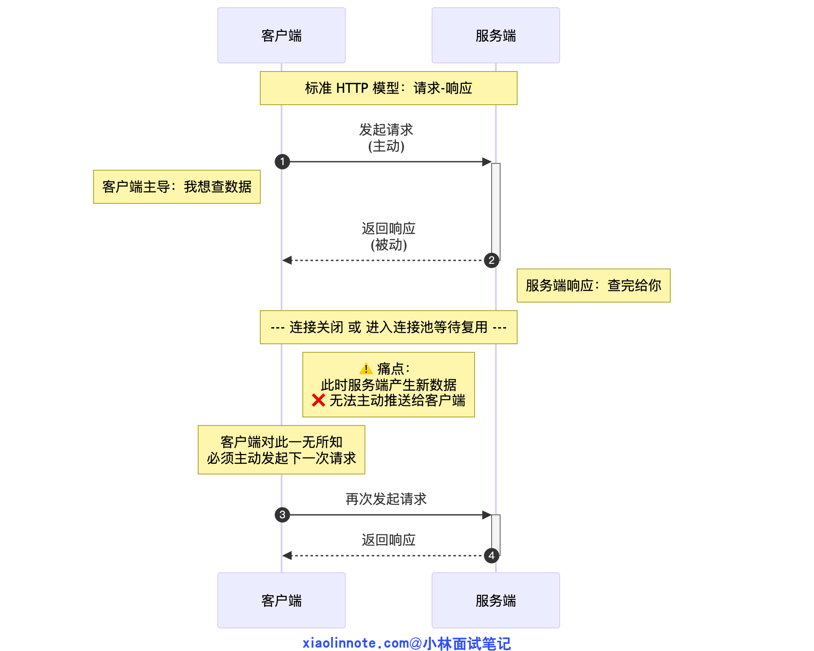
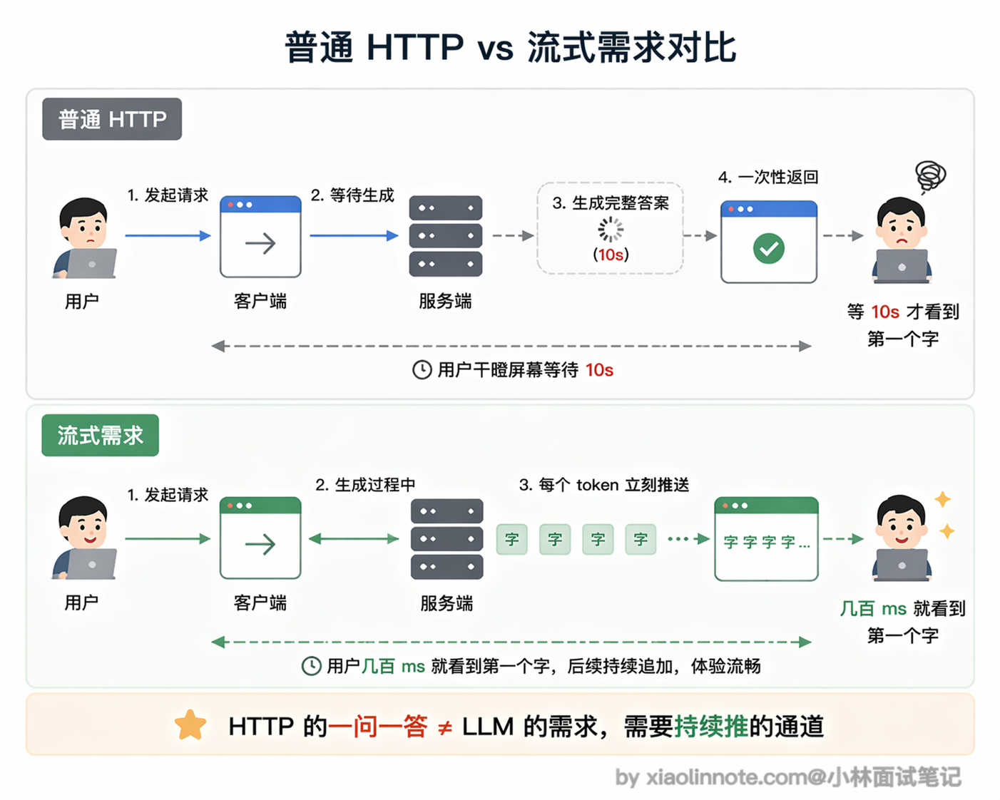
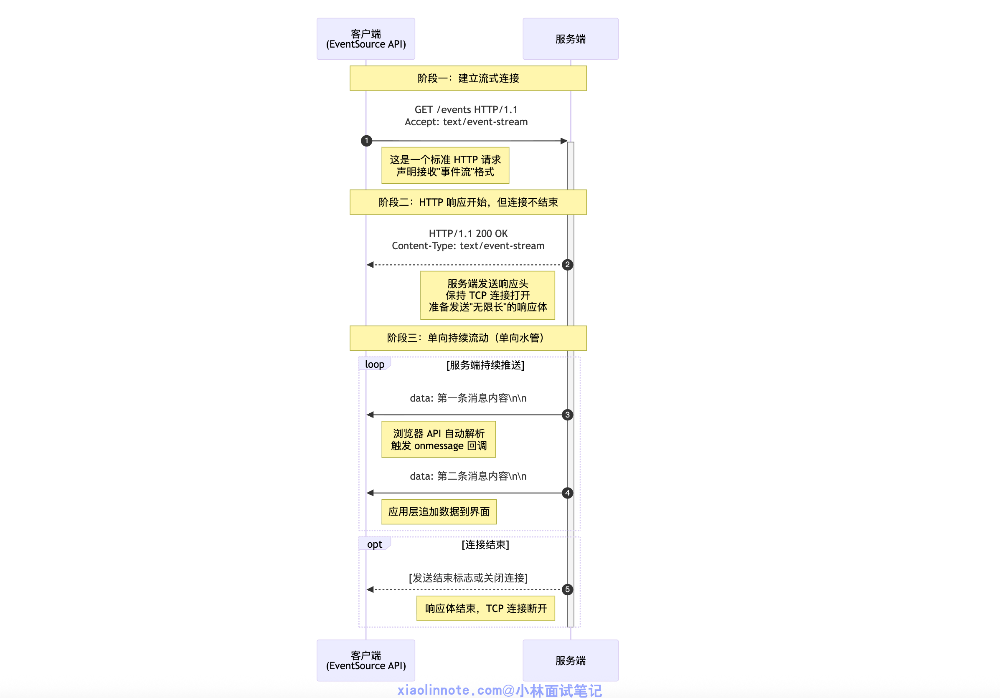
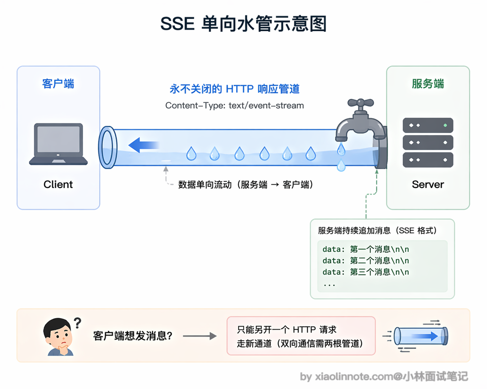
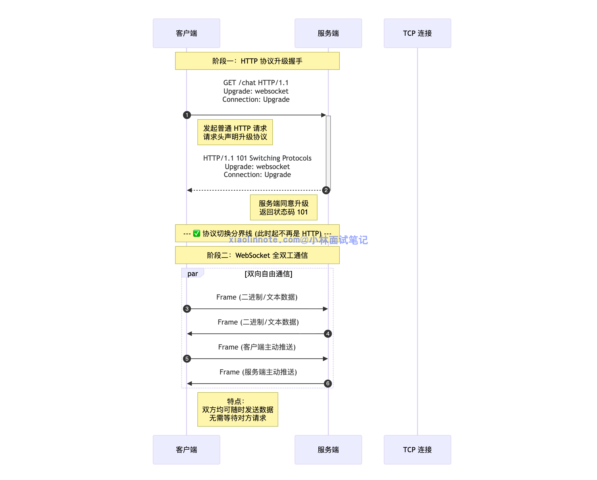
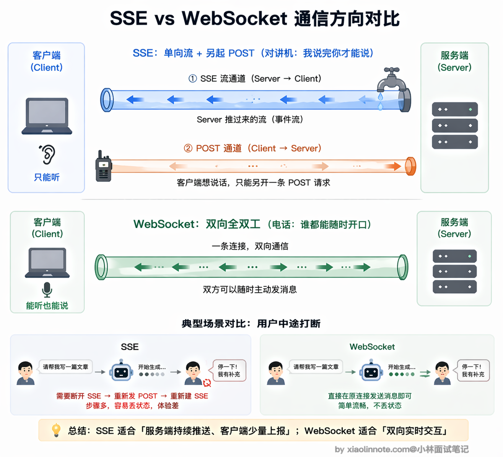
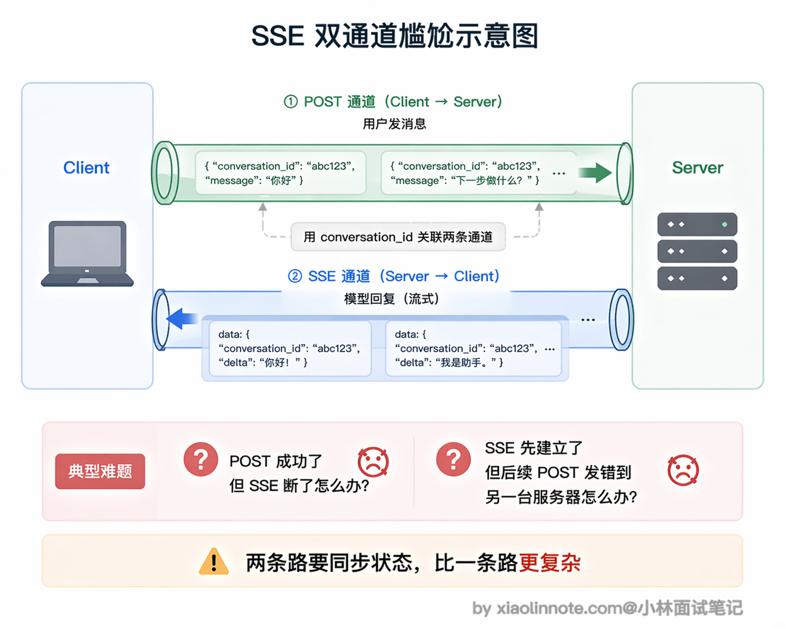
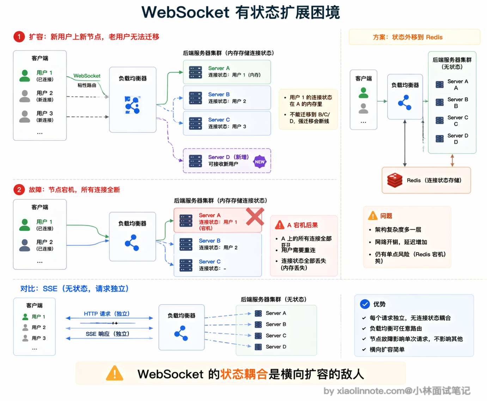
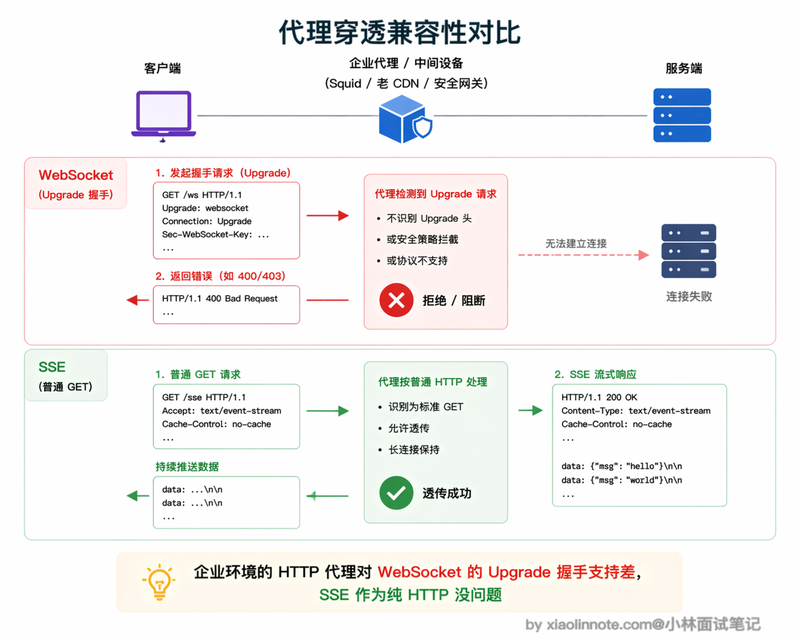
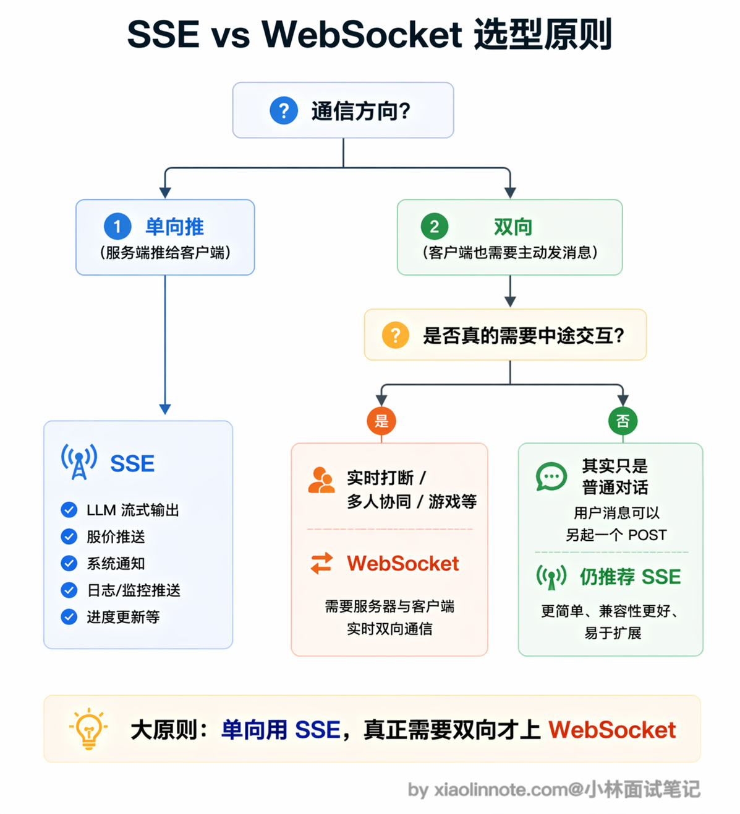

本篇目录
14. 说说 WebSocket 和 SSE 通信的区别及局限性？
👔面试官：说说 WebSocket 和 SSE 通信的区别及局限性？
🙋♂️我：SSE 和 WebSocket 都是长连接，区别就是 SSE 比较简单，WebSocket 比较复杂。做 AI 对话的话，WebSocket 更好，因为它功能更强大，全双工嘛。
👔面试官：「功能更强大就更好」？那为什么 OpenAI、Anthropic 的流式 API 全都用 SSE 而不是 WebSocket？你得从实际场景出发去分析，不能只看功能强不强。
🙋♂️我：可能是因为 SSE 更简单吧？不过我觉得 SSE 就是 WebSocket 的简化版，功能上是 WebSocket 的子集，没什么本质区别。
👔面试官：这个理解不对。SSE 是 HTTP 协议的原生特性，WebSocket 是一个独立协议，两者底层机制完全不同。而且各自都有明确的局限性，SSE 有连接数限制、只支持文本传输；WebSocket 有状态、扩展难、容易被代理拦截。选型要看场景需求，不是简单的「谁是谁的子集」。
看来 SSE 和 WebSocket 的区别远不止「简单 vs 复杂」这么表面，下面我从底层原理到实际局限，把两者的核心差异和各自的坑都讲清楚。
💡 简要回答
我觉得最核心的区别是通信方向：SSE 是服务端单向推，客户端只能接收，想发消息只能另起一个 HTTP 请求；WebSocket 是全双工，双方都可以随时主动发消息。
对于 LLM 流式输出这种「模型一直在推 token、用户只是看」的场景，SSE 完全够用，而且轻量、HTTP 原生支持、运维简单，OpenAI 和 Anthropic 的 API 用的都是 SSE。
WebSocket 的复杂性只有在真正需要双向实时交互的时候才值得引入，比如用户要在模型说话过程中随时打断。
两者各有局限：SSE 在 HTTP/1.1 下有连接数上限，只支持文本传输；WebSocket 有状态、横向扩展麻烦，还容易被企业代理或防火墙拦掉。大多数 LLM 文字对话产品用 SSE 就够了。
📝 详细解析
先从 HTTP 的本质说起
要真正理解 SSE 和 WebSocket 的区别，不能只看它们各自的功能列表，得先回到更底层的问题：它们到底在解决什么问题？答案是普通 HTTP 做不到的事情。
标准的 HTTP 请求是「一问一答」模型：客户端发请求，服务端返回响应，连接关闭（或者进连接池等待下次复用）。
服务端在任何时候都不能主动「推」数据给客户端，它只能被动等客户端来问。你可以把它想象成打电话：你说一句「你好」，对方回一句「你好」，然后挂电话，这条线就断了。这套机制在传统 Web 里够用，但 AI 对话场景不行。

模型生成一个完整回答需要几秒甚至十几秒，如果等全部生成完再一次性返回，用户只能干瞪着空白屏幕等待，体验极差。我们需要的效果是：模型生成一个词就推一个词，用户实时看到文字逐渐出现，就像 ChatGPT 那样一个字一个字「打」出来。这就需要连接保持打开、服务端能主动持续往外推数据，HTTP 的「问一答一然后断」做不到这件事。

SSE：用普通 HTTP「撑开」一条单向水管
SSE（Server-Sent Events，服务器推送事件）本质上是对 HTTP 的一种「巧用」，不是新协议，而是 HTTP/1.1 里本来就有的特性，只不过以前很少用。
它的做法是：客户端发一个普通 HTTP GET 请求，但在请求头里声明 Accept: text/event-stream，告诉服务端「我想收流式数据」。服务端收到后，不关闭连接，而是保持连接持续打开，不停往里写数据。

这条连接在技术上仍然是一个 HTTP 响应，只不过响应体是「无限长」的，服务端在不断往里追加内容，直到模型生成完毕才发送结束标志。可以把它理解为「一根从服务端流向客户端的单向水管」，水（数据）只能从服务端流向客户端，客户端没法往管子里倒水。

有必要讲一下 SSE 的消息格式是什么样的，因为这直接决定了它为什么这么好用。
SSE 的数据不是 JSON，而是一种非常简单的纯文本格式，每条消息以 data: 开头，后面跟数据内容，结尾是两个换行符。
如果你现在打开 ChatGPT，按 F12 打开开发者工具，切到 Network 面板，找到流式响应请求，就能看到一行一行类似 data: {"token": "你"} 这样的文本在不断追加进来，每出现一行浏览器就触发一次事件。
浏览器专门有一个叫 EventSource 的内置 API 来处理这种格式，你只需要打开这个连接，注册一个 onmessage 回调函数，每收到一条消息就自动触发，完全不用自己解析底层数据流，用起来非常方便。
SSE 之所以成为 LLM 流式输出的行业标准，还有一个很关键但容易被忽视的原因：文字传输天然适合 TCP 的可靠有序传输。模型输出是一个个 token 组成的连续文本，如果中间某个 token 丢了，整段话的意思可能完全变了，顺序乱了更是无法阅读。
所以你希望每个 token 都准确到达、不乱序，这恰恰是 TCP 的强项。你愿意等网络重传，因为等来的是正确的内容。这和语音场景（WebRTC）完全相反，那里 TCP 的重传机制会造成不可接受的延迟，所以语音要换 UDP；但文字场景里 TCP 反而是你的朋友，你需要它。
WebSocket：从 HTTP 升级成真正的双向信道
理解了 SSE 是怎么回事，WebSocket 就很好对比了。WebSocket 是一个独立的协议，建立在 TCP 之上，但不是 HTTP 的特性。它的建立过程有一个特殊的「握手仪式」：客户端先发一个看起来像普通 HTTP 请求的东西，但请求头里带了一句话「我想升级成 WebSocket」。
服务端如果同意，回一个 101 Switching Protocols 的响应，从这一刻起，这条 TCP 连接就「变性」了，不再遵循 HTTP 的一问一答规则，变成了一条双方都可以随时说话的全双工信道。你可以把这个转变想象成：原来是对讲机（你说完按按钮让对方说），升级成了电话（双方都可以随时开口，谁都不用等谁）。

和 SSE 最本质的区别是通信方向。SSE 只有服务端能主动推，客户端想发消息必须另起一个 HTTP 请求，两个方向用了两套机制；WebSocket 是真正的双向，客户端和服务端都可以随时主动发消息，对方立刻就能收到，没有任何「谁先说话」的限制，一条连接搞定两个方向。
用「用户要在模型说话中途打断」这个场景来感受两者的差别：用 SSE 时，用户想打断，只能先关掉当前 SSE 流（第一个请求结束），再发一个新的 POST 请求（第二个请求开始），这两个动作之间有一个明显的断-重连过程，操作上有割裂感；用 WebSocket 时，用户直接在同一条连接里发送「停止」指令，服务端立刻收到，立刻停止生成，整个过程流畅、无缝，真正的实时双向交互。

SSE 的局限：不只是「单向」那么简单
说完了两者的核心区别，接下来要聊它们各自的局限性了，这往往是面试官追问的重点。先看 SSE。
SSE 的单向性带来的第一个麻烦，是架构上的「双通道尴尬」。
SSE 只能从服务端推向客户端，用户发消息必须走一个独立的 POST 请求，这意味着同一个对话用了两条通道，用户发消息走 POST，模型回复走 SSE，两者之间要靠一个 conversation ID 关联起来。
服务端收到 POST 请求后，找到对应的 SSE 长连接，把模型输出推过去。对于简单场景这套机制够用，但状态管理比 WebSocket 的单一通道复杂，出问题时排查链路也更长。

第二个容易被忽视的坑是 HTTP/1.1 的连接数限制。
浏览器对同一个域名的 HTTP/1.1 连接有 6 条的上限，SSE 占一条长连接，如果用户同时开了多个标签页，第 7 个标签页的 SSE 请求会被浏览器排队等待，导致某些标签页没有响应，看上去就是「页面卡死了」。HTTP/2 通过多路复用解决了这个问题，一条 TCP 连接上可以跑无数条逻辑流，所以现代部署一般要求 HTTP/2，这个问题也就消失了。但如果你的用户环境里有老浏览器或者不支持 HTTP/2 的代理，这就是一个真实的坑。
第三个是 SSE 只能传文本这条限制。
传语音或者图片时，必须先做 Base64 编码才能用 SSE 传输，数据量会膨胀约 33%，接收端还要额外解码，延迟和 CPU 开销都不小。实时语音场景下这个代价完全不可接受，所以实时语音要用 WebRTC 而不是 SSE。
还有一个实现细节是断线重连。SSE 有内置的重连机制，断线后会自动尝试重连，这是优点。但要做到「断了接着上次继续」而不丢消息，服务端必须支持 Last-Event-ID，客户端重连时带上上次收到的最后一条消息 ID，服务端从那条之后重放。很多实现省略了这块，结果断线后用户会丢失中间的内容，重连看到的是截断的回答。
WebSocket 的局限：有状态带来的扩展麻烦
WebSocket 最麻烦的问题是「有状态」。
每条 WebSocket 连接在建立时被负载均衡器路由到某一台后端服务器，之后这个用户的所有消息都必须发到同一台服务器，因为连接状态就保存在那里。
当你想横向扩容、加新的机器时，新机器接不到老连接，老连接的用户无法迁移到新机器，扩容的效果大打折扣。
常见的解决办法是把连接状态外移到 Redis 等共享存储，通过发布订阅机制把消息中转到正确的服务器，但这让架构明显变复杂，多了一跳，延迟也增加了。
相比之下，SSE 的每次请求都是普通 HTTP，负载均衡器可以把任意请求路由到任意后端，横向扩展非常简单，这是 SSE 在大规模部署场景的一个明显优势。

第二个实际部署中频繁踩的坑是代理和防火墙穿透。
很多企业的 HTTP 代理（比如 Squid）、老版本 CDN、某些安全网关不支持 WebSocket 的 Upgrade 握手，直接把这个请求当成异常 HTTP 请求拒掉，导致 WebSocket 连接建立失败。
SSE 就不会有这个问题，它始终是普通 HTTP 请求，任何代理都能透传，不需要任何特殊配置。
这也是为什么早期 MCP 协议的远程传输选择了 SSE 而不是 WebSocket，MCP Server 需要在各种复杂的网络环境下都能工作，SSE 对这些环境的兼容性好得多（MCP 在 2025 年 3 月的规范更新里进一步升级到了 Streamable HTTP，本质上还是走 HTTP + SSE 流，详见 13 题）。

第三个是 WebSocket 没有内置的请求-响应配对机制。HTTP 里每个请求有自己的响应，天然一一对应。WebSocket 里消息就是消息，服务端发来一条消息，你不知道它对应哪个请求，需要自己在消息里加请求 ID，在客户端维护请求 ID 到等待回调的映射表，才能实现「发出一条消息，等待特定响应」的语义。
说起来不难，但实现起来是不少的工作量，而且一旦断线重连，那些还在等待响应的请求该怎么处理，也需要专门设计重试逻辑。
在 AI 场景下怎么选？
大原则是「单向推就用 SSE，真正需要双向才上 WebSocket」。文字对话天然是单向推：模型在说话，你在看，你想回复直接发一个新的 POST 就行，SSE 完全够。只有当你需要客户端在任意时刻主动说话，比如实时打断、多人协同编辑、游戏类实时同步，才值得引入 WebSocket 的复杂度。
| 场景 | 推荐方案 | 原因 |
|---|---|---|
| LLM 流式文字输出（ChatGPT 风格） | SSE | 单向推送够用，轻量，HTTP 原生支持，运维简单 |
| 多轮对话（用户发消息 + 模型回复） | SSE + 普通 POST | 用户发消息走 POST，模型回复走 SSE，解耦简单 |
| 需要用户中途打断模型输出 | WebSocket | 需要客户端在流式输出中途主动发消息 |
| 多人协同（多用户同时编辑、实时同步） | WebSocket | 频繁双向消息，SSE + POST 的双通道架构太繁琐 |
| 实时语音对话 | WebRTC | 音频流需要 UDP + 低延迟，WebSocket 的 TCP 重传是瓶颈 |
| MCP 远程 Server | Streamable HTTP（内部仍用 SSE 做流式） | MCP 2025-03-26 规范从早期的 HTTP+SSE 双端点升级为单端点的 Streamable HTTP，保留了代理穿透友好的特性 |
绝大多数 LLM 文字对话产品用 SSE 就够了，这也是为什么 OpenAI、Anthropic 的 API 都选 SSE 而不是 WebSocket。WebSocket 的复杂性只有在真正需要双向实时通信时才值得引入。

🎯 面试总结
回到开头踩的雷，最大的误区是觉得「WebSocket 功能更强大所以更好」，或者把 SSE 当成 WebSocket 的简化版。
面试回答这道题，第一个核心要点是通信方向的区别：SSE 是服务端单向推送，客户端想发消息要另起 HTTP 请求；WebSocket 是全双工，双方都可以随时主动发消息。这是两者最本质的差异，不是「简单 vs 复杂」的关系。
第二个要点是各自的局限性，这往往是面试官追问的重点。
SSE 的三个坑要记住：HTTP/1.1 下同域名连接数上限（6 条）、只支持文本格式（传二进制要 Base64 编码膨胀 33%）、单向性导致的双通道架构复杂度。
WebSocket 的三个坑也要说到：有状态导致横向扩展麻烦（需要 Redis 等共享存储做连接状态外移）、容易被企业代理和防火墙拦截（Upgrade 握手被当异常请求拒掉）、没有内置的请求-响应配对机制（需要自己维护请求 ID 映射）。
第三个要点是选型原则：单向推用 SSE，真正需要双向才上 WebSocket。LLM 文字对话场景绝大多数用 SSE 就够了，这也是 OpenAI 和 Anthropic 的选择。能说出这个判断依据，比单纯罗列功能差异更有说服力。
对了，大模型面试题会在「公众号@小林面试笔记题」持续更新，林友们赶紧关注起来，别错过最新干货哦！